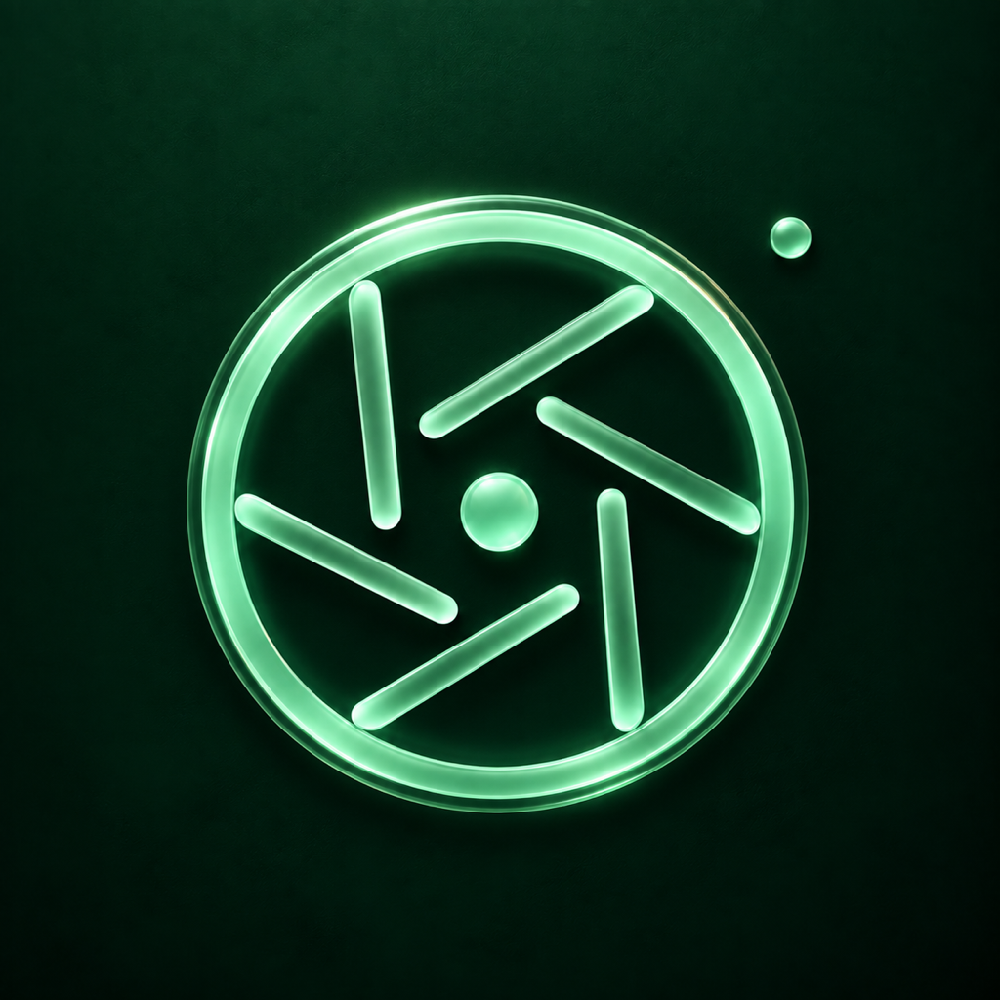

Xem trực tiếp. Chụp tự do.
Bộ lọc trực tiếp cho ảnh, video và Live Photo. Live Photo mặc định tắt; bạn có thể bật khi cần.

Magic Camera简体中文 · 繁體中文 · English · 日本語 · Français · Deutsch · 한국어 · Español · Tiếng Việt · Русский
Magic Camera · iPhone · iOS 18+
Pixel, mực, kính màu và dư âm thời gian. Xem bộ lọc trực tiếp, chụp ảnh, quay video và Live Photo trên iPhone. Lưu và chia sẻ theo ý bạn.
Bộ lọc trực tiếp cho ảnh, video và Live Photo. Live Photo mặc định tắt; bạn có thể bật khi cần.
Chỉ xin quyền thêm vào Ảnh khi bạn xuất tác phẩm
Bao gồm bộ lọc và tính năng Pro được thêm trong các phiên bản sau.
Bản miễn phí gồm ảnh gốc và năm bộ lọc phong cách đầu tiên với cường độ mặc định, mỗi video dài tối đa 15 giây. Tác phẩm được lưu trong ứng dụng trước.
Tất cả bộ lọc phong cách · Tùy chỉnh cường độ
Bỏ giới hạn thời lượng quay
Mua một lần · Không đăng ký
Bỏ giới hạn miễn phí 15 giây mỗi video. Dung lượng, nhiệt độ và gián đoạn hệ thống vẫn có thể giới hạn thời gian quay.Xuất tác phẩm quan trọng vào Ảnh hoặc nơi khác. Xóa ứng dụng sẽ xóa tác phẩm cục bộ. Khôi phục giao dịch không lấy lại ảnh hay video đã xóa.
Cách sử dụng →